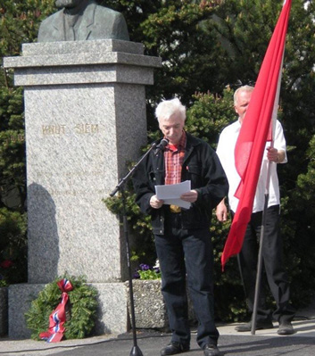

Folkets hus i Kristiansund, 1. mai 2009:
Tale til Spaniakjemperne
Det er i år 70 år siden den spanske borgerkrigen formelt var over. 1. april 1939 holdt General Francisco Franco en radiotale til den spanske nasjon der han erklærte at det han kalte “Den Røde Armé” var beseiret.
Det var imidlertid ikke bare begynnelsen på en langvarig terror, med tortur og henrettelser mot fascismens motstandere i Spania, det var også begynnelsen på en motstandskamp som skulle komme til å vare helt til Francos død.
Solturismens falske fasade var det som møtte norske turister mens det foregikk en undergrunnskrig mot Spanias brutale politimakt og mot militære mål, der de siste geriljakrigerne kom ut av skjulestedene sine i byene og ned fra fjellene først etter Francos død.
I 2002 erklærte det spanske parlamentet Francos militærkupp mot den spanske republikken som illegalt.1
Det ble også satt ned en komite som skulle se på skjebnen til Franco-fascismens ofre både under og etter borgerkrigen.
Gode intensjoner til tross har likevel arbeidet med å skrive om historia, finne ofrene og rehabilitere forfulgte og fengslete anti-fascister også blitt aktivt motarbeidet, og arbeidet er på langt nær fullført.
Ikke minst har skylda vært hard å svelge for den katolske kirka i Spania, som både under og etter borgerkrigen var en av Francos sterkeste støttespillere og en aktiv og ivrig deltager i undertrykkinga av det spanske folket.
Utallige ofre for terroren har i ettertid vitnet om prestenes medvirkning og deres irettesettende ondskap ikke minst i møte med familiene til ofrene for fascistenes tortur og henrettelser. De henrettede hadde ifølge presteskapet bare fått det de fortjente og var nå der de skulle være – i Helvete.

(Foto: © Gerd Knudtsen, 2009.)
Det vi må spørre oss om, er hvorfor verden så glatt godtok eksistensen av Franco-regimet etter at den tyske og italienske fascismen var overvunnet?
Politikere og næringsliv som var skjønt enige om hvor forferdelig kommunismen i Sovjet var, hadde få eller ingen problemer med å både handle med og samarbeide med det fascistiske Spania.
Under den annen verdenskrig ventet spanjolene i spenning mens krigen gikk mot slutten og de alliertes seier nærmet seg. I tro på at den neste fascisten som ville få det han fortjente ville være Franco.
De ventet ikke bare forgjeves, de fikk erfare hvordan Franco-Spania stilltiende under den kalde krigen både økonomisk og politisk ble invitert inn i det gode selskap som den gode anti-kommunisten han var.
Hvor fjernt var ikke det fra de rundt 250 til 300 nordmenn som reiste til Spania for å kjempe mot fascismen! Som så faren og som kanskje ante hva som kunne og skulle skje dersom fascisme og nazisme ikke ble stanset. Og det var på Spanias jord at den første store sjansen til å stanse den kom.
Hvor fjernt også fra det norske folks engasjement under borgerkrigen da det ble startet en stor solidaritetsaksjon for den spanske republikken og det ble samlet inn ikke bare to millioner kroner, en enorm sum etter datidas målestokk, men også mengder av medisin, mat og klær. Ingen annen nasjon ga så mye pr. innbygger!
Spaniahjelpen ble forløperen til det som senere ble Norsk Folkehjelp.
De vestlige demokratiske regjeringenes ikke-innbladingspolitikk i forhold til Spania står som en skamplett i historia, og det er kanskje dette som har gjort at så mange også i vårt land slett ikke har likt å snakke verken om forbudet mot å dra til Spania for å kjempe i borgerkrigen eller tausheten omkring de som gjorde det da de kom tilbake.
Men Norge som nasjon var etter krigen i 1945 samtidig internasjonalt sett på som en av Spanias verste politiske fiender i Vesten, blant annet i Franco-diktaturets forsøk på å få Spania inn i NATO, noe mange andre land jo ivret sterkt for.
Ei hovedårsak til den norske skepsisen til å hente Spania inn i den vestlige varmen var utvilsomt den sterke og vedvarende motstanden mot diktaturet i Spania i hele den norske arbeider-bevegelsen.
I avskjedstalen sin i Barcelona til de frivillige som hadde kjempet på republikkens side i kampen mot fascistene sa Dolores Ibaruri:
“Kamerater i den Internasjonale Brigade. Dere er historie, dere er legende. Vi kommer ikke til å glemme dere. Når fredens oliventre igjen blomstrer, kranset med bladene av den spanske republikkens seier – kom tilbake til oss!”
Hun visste nok ikke da at foran Spania lå det så mange år med diktatur og undertrykking at de fleste av de som kjempet på republikkens side i kampen ikke lenge var i live da demokratiske friheter endelig ble innført i Spania etter Francos død.
I Spania i 1997 tok jeg kontakt med fagorganisasjonen CGT fordi vi ønsket å besøke gravene til de falne i borgerkrigen på kirkegården i Barcelona. Den internasjonale sekretæren Angel Bosqued kjørte oss velvillig til kirkegården og viste oss rundt til mange gravsteiner og monumenter som bar inskripsjoner som viste at de som lå der hadde kjempet og dødd for republikkens sak. Deriblant også utenlandske frivillige.
Alt virket velholdt og ryddig og mange steder lå det friske blomster på gravene. Et nytt stort monument var dessuten viet alle utlendinger som hadde kjempet mot fascistene under borgerkrigen.
Bare tre steder i Norge står det derimot noen form for minnesmerke over Spaniakjemperne. Det ene av dem ser vi bak oss her, på Folkets Hus i Kristiansund!
Det skal vi være stolte av og ta vare på. For om 1. mai er en dag da vi hyller arbeiderbevegelsens store kvinner og menn, så vil disse to, Nils Ersnes og Johan Åsgård på denne dagen stå som representanter for det engasjement og den rettferdighetssans som får vanlige mennesker til å våkne, og om nødvendig med livet som innsats kjempe for den sak og den ideologi som djupest sett forener alle i arbeiderbevegelsen:
Rettferdighet og solidaritet i kampen mot urett hvor enn i verden den måtte finnes!
Fotnote:
- I 2007 vedtok for øvrig den spanske nasjonalforsamlingen en lov der Francos militærkupp mot den spanske republikken ble offisielt fordømt. Symboler fra Franco-tida skulle fjernes fra gater og bygninger. De summariske straffesakene ble i tillegg kjent ugyldige. | ↩
Se også disse artiklene: